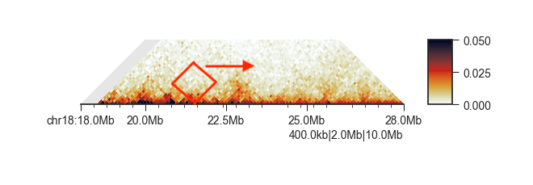

Hi-C domain analysis¶
Note
The following examples use the matrix files in FAN-C format. If you want to try the same
commands using Juicer .hic files, replace output/hic/binned/fanc_example_100kb.hic
with architecture/other-hic/fanc_example.juicer.hic@100kb. You will also need to adjust the
-vmax value in the triangular matrix plot to 50. If you want to work with
Cooler files in this tutorial, use architecture/other-hic/fanc_example.mcool@100kb.
The results will be minimally different due to the “zooming” and balancing applied by
each package.
Like compartments, topologically associating domains, or TADs, for a fundamental level of genome organisation.
fancplot -o architecture/domains/fanc_example_100kb_tads.png chr18:18mb-28mb \
-p triangular output/hic/binned/fanc_example_100kb.hic -m 4000000 \
-vmin 0 -vmax 0.05

FAN-C provides multiple “scores” that are designed to find the boundaries between domains.
Insulation Score¶
The insulation score (Crane et al. 2015) adds up contacts in a sliding window align the Hi-C matrix diagonal.
Regions with low score are “insulating”, i.e. regions between domains. Regions with high scores are most likely found inside domains.
Use fanc insulation to calculate the insulation score from the command line:
usage: fanc insulation [-h] [-o OUTPUT_FORMAT]
[-w WINDOW_SIZES [WINDOW_SIZES ...]] [-r REGION] [-i]
[--offset OFFSET] [-L] [-N]
[--normalisation-window NORMALISATION_WINDOW] [-s] [-g]
[--trim-mean TRIM_MEAN] [-tmp]
input [output]
Positional Arguments¶
- input
Input matrix (Hi-C, fold-change map, …)
- output
Output file. Format will be determined by “-o”. By default, this is a FAN-C InsulationScores object, for maximum compatibility with other analyses. If you choose a text-based output format (BED, GFF, BigWig), this parameter will be the file prefix, and the window size will be appended.If not specified and output format is one of bed, gff, or bigwig, the input file name forms the output file prefix.
Named Arguments¶
- -o, --output-format
Format of the output file. By default, this is a FAN-C InsulationScore object, for maximum compatibility with other analyses. Other options are “bed”, “bigwig”, and “gff”
- -w, --window-sizes
Window sizes in base pairs. You can also use abbreviated number format (i.e. 1.5M, 250kb, etc). If not specified, will choose the window sizes based on the matrix resolution r when calculating scores. Specifically: r*3, r*5, r*7, r*10, and r*15
- -r, --region
Region selector (<chr>:<start>-<end>) to only calculate II for this region.
- -i, --impute
Impute missing values in matrix. If set, missing matrix values (where an entire Hi-C bin has 0 contacts) will be replaced by the expected value at the given distance.
- --offset
Window offset in base pairs from the diagonal.
- -L, --no-log
Do not log2-transform insulation index after normalisation. Log-transformation roughly centers values around 0, but if you need this to be exactly centered, use the “–geom-mean” option.
- -N, --no-norm
Do not normalise index to insulation average Default is whole chromosome normalisation - to normalise to smaller regions, use –normalisation-window.
- --normalisation-window
Size of the normalisation window (moving average) in bins. Default: whole chromosome.
- -s, --subtract-mean
Subtract mean instead of dividing by it when “-n” is enabled. You probably do not want this, unless you are working with log-transformed matrices (e.g. fold-change matrices)
- -g, --geom-mean
Use geometric mean for normalisation (rather than arithmetic mean). Useful in conjunction with –log to center the distribution at 0. This is very important when comparing insulation scores, for example using the “fanc compare” command!
- --trim-mean
Use a trimmed mean for insulation index normalisation with this cutoff (fraction of scores)
- -tmp, --work-in-tmp
Work in temporary directory
Example¶
fanc insulation is typically used to calculate insulation scores with multiple window
sizes at the same time, as a single window size might be prone to local matrix differences:
fanc insulation output/hic/binned/fanc_example_100kb.hic \
architecture/domains/fanc_example_100kb.insulation \
-w 1000000 1500000 2000000 2500000 3000000 3500000 4000000
Window sizes are chosen using the -w parameter.
We can easily plot all insulation scores at the same time using fancplot:
fancplot -o architecture/domains/fanc_example_50kb_tads_insulation.png chr18:18mb-28mb \
-p triangular output/hic/binned/fanc_example_100kb.hic -m 4000000 -vmin 0 -vmax 0.05 \
-p scores architecture/domains/fanc_example_100kb.insulation

Output formats¶
The default output format has maximum compatibility within FAN-C, but other tools like
genome browsers won’t be able to read it. Export of insulation scores to a different
format is simple. Just choose -output-format bed to export to BED file,
-output-format gff to export to GFF format, or -output-format bigwig to export
to an indexed BigWig file. The latter is a binary file, and hence not readable as
text format, but is the fastest for accessing subsets of scores.
When using an output format other than the default, the second positional argument (output) becomes an output file prefix. It is appended by the window size (in abbreviated form, i.e. 1000000 becomes “1mb”) and gets the file ending of the chosen format. Example:
fanc insulation output/hic/binned/fanc_example_100kb.hic \
architecture/domains/fanc_example_100kb.insulation \
-w 1000000 1500000 2000000 2500000 3000000 3500000 4000000 \
-o bed
This produces the output files:
architecture/domains/fanc_example_100kb.insulation_1.5mb.bed
architecture/domains/fanc_example_100kb.insulation_1mb.bed
architecture/domains/fanc_example_100kb.insulation_2.5mb.bed
architecture/domains/fanc_example_100kb.insulation_2mb.bed
architecture/domains/fanc_example_100kb.insulation_3.5mb.bed
architecture/domains/fanc_example_100kb.insulation_3mb.bed
architecture/domains/fanc_example_100kb.insulation_4mb.bed
Of course, you can also simply convert existing insulation scores to another format without having to recalculate everything. Simply run:
fanc insulation architecture/domains/fanc_example_100kb.insulation \
-o bed
and the insulation scores for all window sizes in the object will be converted to BED
files using the input file name as prefix. If you only want to convert specific window
sizes, use the -w parameter. To find out which window sizes are available in a
previously calculated scores object, simply run fanc insulation without any
parameters:
fanc insulation architecture/domains/fanc_example_100kb.insulation
This prints:
Window sizes available in object:
1mb 1.5mb 2mb 2.5mb 3mb 3.5mb 4mb
You can plot scores from one or more window sizes using the line plot in fancplot:
fancplot --width 6 -o architecture/domains/fanc_example_100kb_tads_insulation_1mb.png \
chr18:18mb-28mb \
-p triangular output/hic/binned/fanc_example_100kb.hic -m 4000000 \
-vmin 0 -vmax 0.05 \
-p line architecture/domains/fanc_example_100kb.insulation_1mb.bed \
architecture/domains/fanc_example_100kb.insulation_2mb.bed \
-l "1mb" "2mb"

Normalisation¶
By default, fanc insulation will normalise the insulation scores to the chromosomal
average and the log-transform them. You can get raw, untransformed scores using -N and
--L, respectively. If you want to normalise the scores, but to a smaller region on the
chromosome (to take into account local variability in insulation), you can choose the
normalisation window size with --normalisation-window. The window is specified in bins.
Normally, fanc insulation will use the arythmetic mean of the chromosomal scores to
normalise. This has the effect that scores upon log2-transformation are not perfectly
centred around 0. To remedy this, you can use the geometric mean instead, with the -g
option.
When you are working with matrices that are already log2-transformed, you may want to use
the -s option to normalise the scores by subtracting, instead of dividing the chromosomal
average.
If you have a lot of outliers and sharp score changes, you may use a trimmed mean
to calculate average scores with --trim-mean <f>, which will ignore the top and bottom
fraction f of scores for calculating the average.
Impute missing values¶
In the above examples, you will notice the region on the left that is unmappable in the Hi-C
matrix. In the insulation score calculation, if the insulation window is covered by more than
50% of unmappable regions, the score will be NaN. fanc insulation offers the option to
impute the unmappable values from the expected values of the chromosome using --impute.
fanc insulation output/hic/binned/fanc_example_100kb.hic \
architecture/domains/fanc_example_100kb.insulation_imputed \
-w 1000000 1500000 2000000 2500000 3000000 3500000 4000000 \
--impute
This will result in score without NaN (at least in the center of chromosomes), but can also be misleading if the region of interest happens to lie in an unmappable region. Therefore use this capability with caution!
fancplot -o architecture/domains/fanc_example_100kb_tads_insulation.png chr18:18mb-28mb \
-p triangular output/hic/binned/fanc_example_100kb.hic -m 4000000 -vmin 0 -vmax 0.05 \
-p scores architecture/domains/fanc_example_100kb.insulation_imputed -vmin -1 -vmax 1

Insulating boundaries (TAD boundaries)¶
Regions in the genome where the insulation score reaches a local minimum represent the region
between two self-interacting domains, or TADs. You can use fanc boundaries to identify these
regions:
usage: fanc boundaries [-h] [-w WINDOW] [-d DELTA] [-s MIN_SCORE] [-x] [-l]
[-m]
input output
Positional Arguments¶
- input
Input InsulationScores or regions file
- output
Path for boundary BED file. When specifying multiple window sizes or if input file has multiple scores in it, this forms the output file prefix and will be appended by ‘<window size>.bed’
Named Arguments¶
- -w, --window-sizes
Insulation index window size to calculate boundaries on. Separate multiple window sizes with comma, e.g. 1mb,500kb,100kb
- -d, --delta
Window size for calculating the delta vector (in bins). Calculation takes into account d bins upstream and d bins downstream for a total window size of 2*d + 1 bins. Default 3.
- -s, --min-score
Report only peaks where the two surrounding extrema of the delta vector have at least this difference in height. Default: no threshold.
- -x, --sub-bin-precision
Report boundary positions with sub-bin precision. This works because the minimum or the the insulation score track can be determined with sub-bin precision. Default: False
- -l, --log
log-transform index values before boundary calling.
- -m, --maxima
Call maxima of the insulation score instead of minima.
When we run fanc boundaries on the above example using 1mb and 2mb as the window sizes:
fanc boundaries architecture/domains/fanc_example_100kb.insulation \
architecture/domains/fanc_example_100kb.insulation_boundaries \
-w 1mb 2mb
We get two output files with all insulation score minima and associated scores (the depth of the minimum compared to the two neighboring maxima):
fanc_example_100kb.insulation_boundaries_1mb.bed
fanc_example_100kb.insulation_boundaries_2mb.bed
Let’s plot the boundaries from the 1mb scores:
fancplot --width 6 -o architecture/domains/fanc_example_100kb_tads_insulation_1mb_boundaries.png \
chr18:18mb-28mb \
-p triangular output/hic/binned/fanc_example_100kb.hic -m 4000000 -vmin 0 -vmax 0.05 \
-p line architecture/domains/fanc_example_100kb.insulation_1mb.bed -l "1mb" \
-p bar architecture/domains/fanc_example_100kb.insulation_boundaries_1mb.bed

As you can see, lower minima get higher scores. By default, fanc boundaries outputs all
minima, but you may set a threshold using --min-score <s> to report only boundaries with
scores greater than s.
fanc boundaries architecture/domains/fanc_example_100kb.insulation \
architecture/domains/fanc_example_100kb.insulation_boundaries_score0.7 \
-w 1mb 2mb --min-score 0.7
By default, fanc boundaries will return minima as matrix bins. However, since the boundary
calls rely on a smoothed insulation score track, it can attempt to identify the boundary location
with sub-bin resolution. Use -x to try this, but be aware that this is not precise.
Directionality Index¶
The directionality index (Dixon et al. 2012) measures the bias in contact frequency up- and downstream of an Hi-C region. When inside TADs, this measure tends towards zero, as interactions in either direction are equally frequent. However, when approaching a TAD boundary this measure changes drastically, as one direction will remain inside the TAD, where there is a high contact intensity, whereas the other direction will lie in a low intensity region outside the TAD.
Use fanc directionality to calculate the directionality index from the command line:
usage: fanc directionality [-h] [-o OUTPUT_FORMAT]
[-w WINDOW_SIZES [WINDOW_SIZES ...]] [-r REGION]
[-tmp]
input [output]
Positional Arguments¶
- input
Input matrix (Hi-C, fold-change map, …)
- output
Output file. Format will be determined by “-o”. By default, this is a FAN-C DirectionalityIndexes object, for maximum compatibility with other analyses. If you choose a text-based output format (BED, GFF, BigWig), this parameter will be the file prefix, and the window size will be appended.If not specified and output format is one of bed, gff, or bigwig, the input file name forms the output file prefix.
Named Arguments¶
- -o, --output-format
Format of the output file. By default, this is a FAN-C DirectionalityIndex object, for maximum compatibility with other analyses. Other options are “bed”, “bigwig”, and “gff”
- -w, --window-sizes
Window sizes in base pairs. You can also use abbreviated number format (i.e. 1.5M, 250kb, etc). If not specified, will choose the window sizes based on the matrix resolution r when calculating scores. Specifically: r*3, r*5, r*7, r*10, and r*15
- -r, --region
Region selector (<chr>:<start>-<end>) to only calculate directionality index for this region.
- -tmp, --work-in-tmp
Work in temporary directory
Example¶
fanc directionality is very similar in syntax to fanc insulation.
It is typically used to calculate directionality indexes with multiple window
sizes at the same time, as a single window size might be prone to local matrix differences:
fanc directionality output/hic/binned/fanc_example_100kb.hic \
architecture/domains/fanc_example_100kb.directionality \
-w 1000000 1500000 2000000 2500000 3000000 3500000 4000000
Window sizes are chosen using the -w parameter.
We can easily plot all directionality indexes at the same time using fancplot:
fancplot -o architecture/domains/fanc_example_100kb_tads_directionality.png chr18:18mb-28mb \
-p triangular output/hic/binned/fanc_example_100kb.hic -m 4000000 -vmin 0 -vmax 0.05 \
-p scores architecture/domains/fanc_example_100kb.directionality
To export the directionality index to other genomic formats using fanc directionality
follow the instructions as for fanc insulation.
A note on TAD calling¶
There are a lot of tools available for calling TADs in Hi-C matrices, including one that we have written called TADtool. However, and this is a point we are also making with TADtool specifically, TAD calling algorithms often depend critically on their input parameters, and different TAD callers can lead to very different results. We are therefore currently not bundling a TAD calling tool with FAN-C, and refer the user to one of the many available tools for TAD calling that offer a wide range of features.